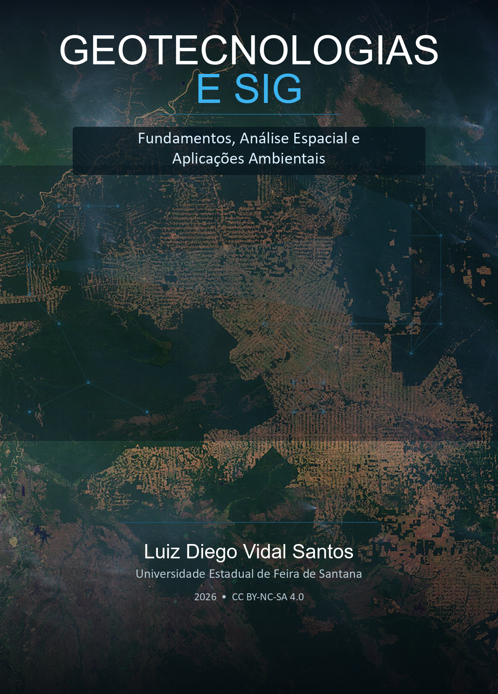

Geotecnologias e Sistemas de Informação Geográfica
Fundamentos, Análise Espacial e Aplicações Ambientais
Livro-texto sobre geotecnologias e SIG aplicados ao monitoramento ambiental, abrangendo geoprocessamento, sensoriamento remoto, geoestatística, hidrologia, gestão de recursos hídricos, mineração e inteligência artificial para análise espacial.
![]()
Sobre este livro

Este é o site do livro “Geotecnologias e Sistemas de Informação Geográfica: Fundamentos, Análise Espacial e Aplicações Ambientais”, escrito por Luiz Diego Vidal Santos.
As geotecnologias constituem o conjunto de técnicas e métodos computacionais voltados à aquisição, armazenamento, processamento, análise e visualização de dados geoespaciais. No centro desse arsenal encontra-se o Sistema de Informação Geográfica (SIG), que integra modelos de dados vetoriais e matriciais com operações de álgebra de mapas, análise de redes, geoestatística e inferência espacial para transformar dados brutos em informação territorial acionável. A convergência recente entre sensoriamento remoto orbital, computação em nuvem, inteligência artificial e Internet das Coisas (IoT) ampliou a escala e a velocidade com que o monitoramento ambiental pode ser conduzido, tornando indispensável a formação de profissionais capazes de operar nesse ecossistema tecnológico.
Este livro apresenta de forma integrada os fundamentos teóricos, os métodos de análise espacial e as aplicações ambientais das geotecnologias, com ênfase em problemas relevantes para regiões tropicais semiáridas. Cada capítulo combina base conceitual, equações fundamentais, exemplos com dados reais e referências à legislação e aos sistemas de monitoramento operacionais no Brasil.
O conteúdo está organizado em quatro partes:
- Fundamentos de Geoinformação e Análise Espacial - Representação do espaço geográfico, modelos de dados, álgebra de mapas, geoestatística, sensoriamento remoto e validação de classificações.
- Solos, Erosão e Degradação Ambiental - Intemperismo, pedogênese, modelagem hidrossedimentológica (RUSLE), degradação, desertificação e retroalimentação climática.
- Hidrologia e Recursos Hídricos - Gestão por bacia hidrográfica, monitoramento hidrológico com geotecnologias, índices de seca e governança hídrica.
- Aplicações Setoriais e Modelagem Avançada - Monitoramento ambiental da mineração, exploração mineral com SIG e inteligência artificial aplicada à pesquisa ambiental.
Para quem é
- Estudantes de graduação e pós-graduação em Engenharia Agronômica, Ambiental, de Minas, Florestal e Geografia
- Profissionais de geoprocessamento, sensoriamento remoto e monitoramento ambiental
- Pesquisadores em recursos hídricos, solos e planejamento territorial
- Gestores de bacias hidrográficas, mineração e licenciamento ambiental
Como citar
Santos, L. D. V. (2026). Geotecnologias e Sistemas de Informação Geográfica: Fundamentos, Análise Espacial e Aplicações Ambientais. Disponível em: https://diegovidalcv.com.br/books/geotecnologias-sig/
Licença
Este livro é disponibilizado sob licença Creative Commons Atribuição-NãoComercial-CompartilhaIgual 4.0 Internacional (CC BY-NC-SA 4.0).